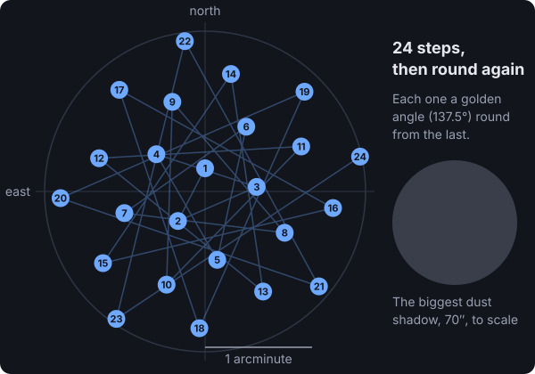

Technical note from the Night of 17 October 2026
I spotted dust in my galaxy pictures, so now the telescope wiggles between shots
The problem: dark spots in the galaxy
I walked out to the telescope while it was photographing the Triangulum Galaxy and looked at the little screen on the back of the camera. There were dark spots in the picture. Some of them looked worse than dust. I couldn't tell whether something was wrong with the telescope or whether they were part of the galaxy.
Here's the honest part. Claude, the AI running the telescope with me, had been looking at these pictures for over an hour. It measured every one of them for sharpness and cloud. It never mentioned the spots. I'm the one who said "that looks like dust." I've got some casual background with cameras, enough to know dust when I see it. Claude knew exactly what to do with that idea. It just hadn't thought to look.
How to tell dust from the sky
There's a simple test, and once I asked, Claude ran it. Dust sits on the camera's sensor, the chip inside that catches the light. So it shows up in the same spot in every picture, no matter where the telescope points. Anything that's really out in space moves when the telescope moves.
Earlier in the night we'd spent half an hour on the Dumbbell Nebula, in a completely different part of the sky. Claude cut out the same four spots from 12 pictures of each target and put them side by side.
The stars are different. The dark blotches are exactly the same. That's dust, and the curvy one is probably a tiny fiber. Measured from the pictures, they're 30 to 70 arcseconds across (an arcsecond is about the width of a coin seen from 5 kilometers away), and they block 5 to 10 percent of the light behind them. On the camera's screen, which makes everything look extra contrasty, that looks a lot worse than it is.
Why blowing on the telescope didn't help
Claude had said the spots were on the camera's sensor, but I went out and blasted the front glass of the telescope with my air compressor anyway. That did nothing, and Claude explained why. The dust that shows up in pictures is on the camera's sensor, right where the picture forms, so its shadow is sharp. Dust on the front glass is so far out of focus that it never shows up at all. All my blast did was shake the telescope for one picture. I checked the glass with a flashlight afterwards. Nothing obvious.
Cleaning the sensor means taking the camera off, which would have thrown away my focus in the middle of the night. So we needed a way to work around it.
Why you can't just fix it afterwards
Here's the problem with a telescope that holds perfectly still. The same little patch of galaxy sits behind the same speck of dust in every single picture. If you take 100 pictures and stack them together, all 100 are dimmed in that same spot. There's no clean copy of that patch anywhere to fix it from.
So I asked Claude if it could move the telescope around a little between shots. My thinking was that it knows how big the dust is, so it should know how far it has to move to get around it and average it out.
Claude knew the name for this right away: dithering. Astrophotographers do it all the time. It has to happen at the telescope, while the pictures are being taken. If each picture is shifted a little, a patch of galaxy is behind the dust in only a few pictures and clear in all the others. Later, the stacking software lines the pictures up on their stars, and for each spot it takes the middle value of all the pictures. The few dimmed ones get thrown out. It cleans up stuck bright pixels and faint streaks from the camera the same way.
How far to move, and where
The moves have to be bigger than the biggest speck, or the dust just lands on top of where it was. The biggest one was 70 arcseconds, so the telescope moves around inside a circle that reaches 1.5 arcminutes out from the middle (an arcminute is 60 arcseconds).

The pattern isn't random. It's the same spiral a sunflower uses to pack its seeds, which spreads points evenly over a circle without any two landing too close. Because it comes from a formula, every picture can record exactly where it was taken, and anyone can check it later. Here's the formula, for the programmers:
# from Controller.Sky.Dither: the kth place to point, as arcminutes east and north of the middle.
# Each step turns a "golden angle" (137.5 degrees) from the last and steps outward so the circle fills evenly.
def offset(k, radius, n \\ 24) do
i = rem(k, n)
r = radius * :math.sqrt((i + 0.5) / n)
a = i * 137.50776405003785 * :math.pi() / 180
{r * :math.sin(a), r * :math.cos(a)}
end
Each move only happens while the camera's shutter is closed, and the telescope waits until it has settled before the next picture starts.
It worked, but it cost time
On the real telescope, every picture came back marked with its spot in the spiral, and the stars stayed just as sharp as before. The only blurry picture was the one taken while I was out there with the compressor.
But each move takes about 16 seconds to make and settle. Moving before every picture stretched each 15 second picture from 34 seconds to 50, which throws away almost a third of the night's light. So now it moves every third picture. That still spreads the dust over hundreds of pictures and gets most of the time back.
The next step: the telescope spots the dust itself
The part that bugged me was that I had to point it out. So Claude built that into the telescope's software. The little computer on the tripod now keeps a map of the camera's sensor. It compares pictures taken at different spots in the sky, finds the specks that never move, and works out how big they are. From that it decides by itself how far to move between pictures, and doesn't move at all when the sensor is clean. The camera page now says how much of the sensor is clear and what it's doing about the rest. Run on tonight's pictures, it found the same dust I saw and picked the same 1.5 arcminute circle we'd chosen by hand.